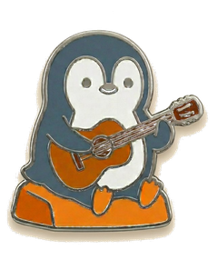

About This Journal
ある概念を知った瞬間に、世界の見え方が不可逆に変わる——そういう体験だけを集めたサイトである。
ある分野を深く理解するには、年単位の学習がいる。でも、その分野の核にある概念を一つ受け取るだけで、日常の見え方が変わることがある。昨日まで気づかなかったものが目に入るようになる。当たり前だと思っていたことに「なぜ？」が生まれる。
Qualia Journalは、その「変わる瞬間」を届けるためのサイトだ。認知バイアス、知覚の錯覚、数学のパラドックス、哲学の思考実験。ジャンルは様々だが、扱うのは一つの種類のトピックだけ——知ると、元の世界に戻れなくなるもの。
このサイトがやっているのは、学問の入口の手前に立つことだ。教科書の1ページ目ですらない。教科書を手に取りたくなる瞬間を作ること。体系的な知識を届ける場所ではなく、好奇心に火をつける場所でありたいと思っている。
知らずとも生きていける。
が、知ったほうが、少しだけいい。
01
まず気づき、それから理由
記事の構成は「え、そうだったのか」が先に来るように作っている。なぜそうなるかの説明は、その後。気づきのない説明は、どこにも届かない。
02
正確に、でも専門家向けではない
概念を歪めない。嘘は書かない。引用元は明示する。ただし、その分野の専門家に新しい知見を提供するためのサイトではない。
03
概念を渡す、証明は渡さない
厳密な証明は原典に任せる。このサイトが渡すのは、見え方を変えるのに十分なだけの概念。その先は、興味を持った人が自分で掘ればいい。
04
好奇心に敬意を払う
読者を馬鹿にしない。数学が苦手でも好奇心がある人、文系だけど科学が面白い人、理系だけど哲学を知らなかった人。そういう人のために書いている。
各記事にはクイズやシミュレーションなどのインタラクティブな仕掛けが入っていることがある。これらの主な目的は概念を直感的に掴んでもらうことであり、厳密な数値やデータの提示を意図したものではない。文章で「こうなる」と読むのと、自分の手で試して結果を見るのでは、残るものが違う。その差を埋めるための装置だと思ってほしい。
各記事の末尾には信頼度ノートがある。その記事が何を根拠にしているか——査読済みの論文か、教科書的な定説か、まだ議論が続いている領域か——を短く記している。引用元へのリンクもできる限り載せている。
記事末尾のターミナル対話（after.sh）は、実在のやり取りではなく架空の読後対話だ。結論を押しつけるためのものではない。読み終えた後の余韻として置いている。
📌 正確さについて
記事の内容は、可能な限り一次資料や査読済みの研究に基づいて書いている。ただし、このサイトは学術誌ではなく、著者は各分野の専門家ではない。内容の正確さを保証するものではないことをご理解いただきたい。

e. Tamaki
Editor / Writer
当たり前だと思っていたことに構造を見つけるのが好きで、気になったら分野を気にせず調べるし、自分で試す。そうやって溜まったものを、読み返すだけのメモではなく、もう一度体験できる形にして置いておきたかった。このサイトはその試みだ。